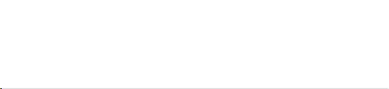

旅游风光

上海老街印象
2011-01-28 18:16
上海老街，又称小东门，这里曾是100年前上海开埠后最早灯火辉煌、万商云集的地方，地处上海市黄浦区老城厢，也就是小东门城门所在地。由于历史原因，城门没有被保留下来，但是老城厢环城的9扇门至今仍深深刻在上海人民心中。上海老街所在的小东门地区，原是上海对外贸易、小商品交易的重要场地，见证了上海的经济社会发展。
苏州游记之山塘
2011-02-20 12:42
山塘街位于古城苏州的西北部，东连红尘中一二等富贵风流之地阊门，西接吴中第一名胜虎丘，全长3600米，因此被称作七里山塘。山塘街始建于公元825年，为唐朝大诗人白居易来苏州担任刺史时所建。有民歌唱到上有天堂，下有苏杭。杭州有西湖，苏州有山塘。两处好地方，无限好风光。这便是对山塘街的生动写照。
